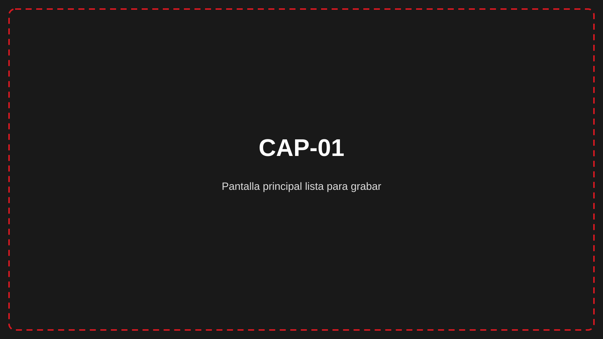
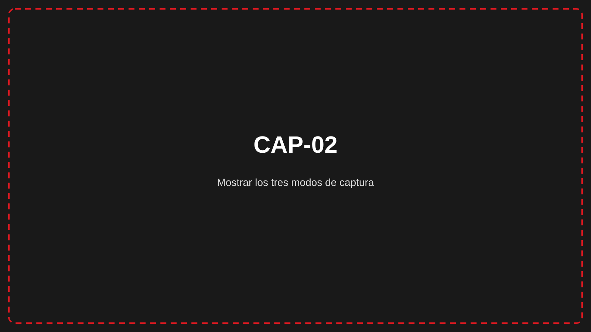
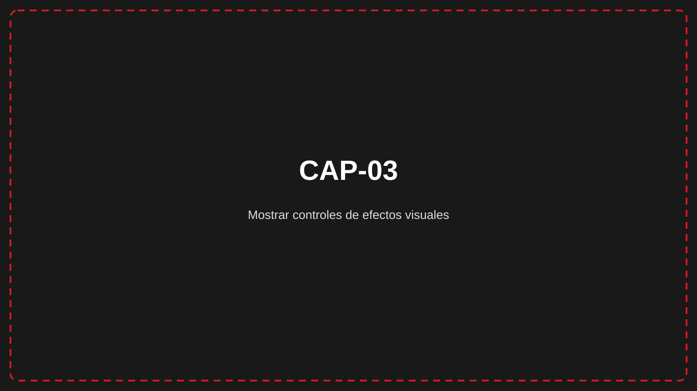
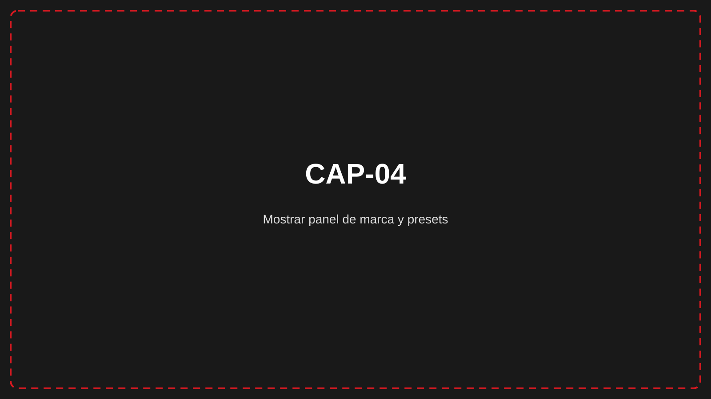
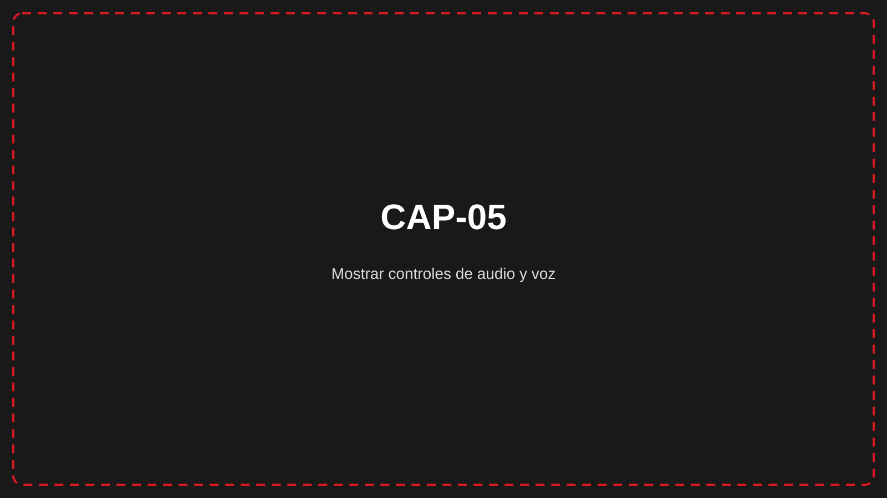

Folleto comercial · Borrador con marcadores visuales
Una herramienta de escritorio para creadores de contenido técnico, desarrolladores y equipos de soporte que necesitan grabar demos, tutoriales y recorridos de software en Windows.
CLAIM-001: verified

Elegís qué mostrar, configurás audio y presentación, grabás y exportás el resultado como MP4. El flujo está pensado para producir una pieza compartible sin pasar obligatoriamente por un editor externo.
CLAIM-002: verified
Qué permite conseguir. Capturar el escritorio completo, una ventana concreta o una zona personalizada.
Ejemplo de uso. Un equipo de soporte graba solo la ventana de una aplicación para explicar un procedimiento.
Alcance y condiciones. Disponible en Windows; la zona se dibuja como rectángulo y puede cancelarse con ESC.

CLAIM-003: verified
Qué permite conseguir. Aplicar efectos de clic, estela, partículas y transiciones para facilitar el seguimiento.
Ejemplo de uso. Un desarrollador destaca dónde hace clic durante una demo.
Alcance y condiciones. Son configurables; Raw/limpio los desactiva por diseño.

CLAIM-004: verified
Qué permite conseguir. Configurar logo, colores, tipografía, intro y cierre, y reutilizarlos como presets.
Ejemplo de uso. Una persona guarda una configuración por proyecto y cambia de preset antes de cada demo.
Alcance y condiciones. Logos PNG/JPG; presets importables y exportables como .recbrand.

CLAIM-005: verified
Qué permite conseguir. Procesar voz con normalización, reducción de ruido, compresión y ecualización.
Ejemplo de uso. Una persona activa la mejora de voz antes de narrar un tutorial.
Alcance y condiciones. Utiliza FFmpeg y se documenta como función PRO.

CLAIM-006: verified
Qué permite conseguir. Ver nombre, progreso y estado de cada trabajo y continuar grabando durante otro procesamiento.
Ejemplo de uso. Un creador revisa la cola y prepara la siguiente toma.
Alcance y condiciones. El resultado final documentado es MP4.
| Aspecto | Alcance verificado |
|---|---|
| Entorno | Windows 10 u 11 de 64 bits |
| Memoria | 8 GB mínimo; 16 GB recomendado |
| Salida | MP4 |
| Procesamiento | FFmpeg; GPU recomendable |
| Idiomas | Español, English y Français |
Consultá requisitos, instalación y primera grabación en wertymsd.github.io/manual-recwerty.
CLAIM-007: verified